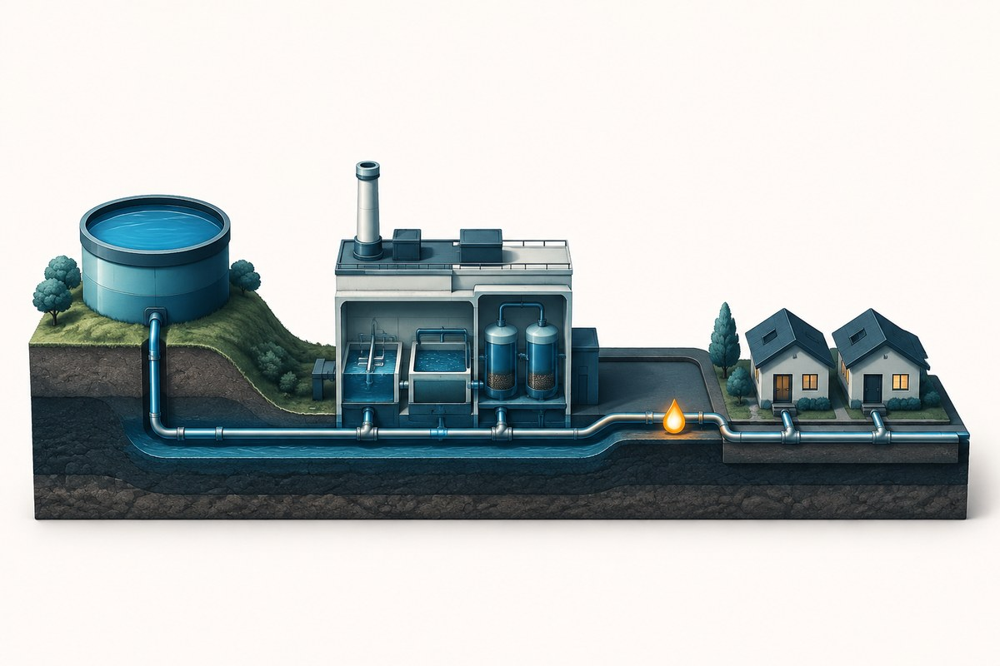
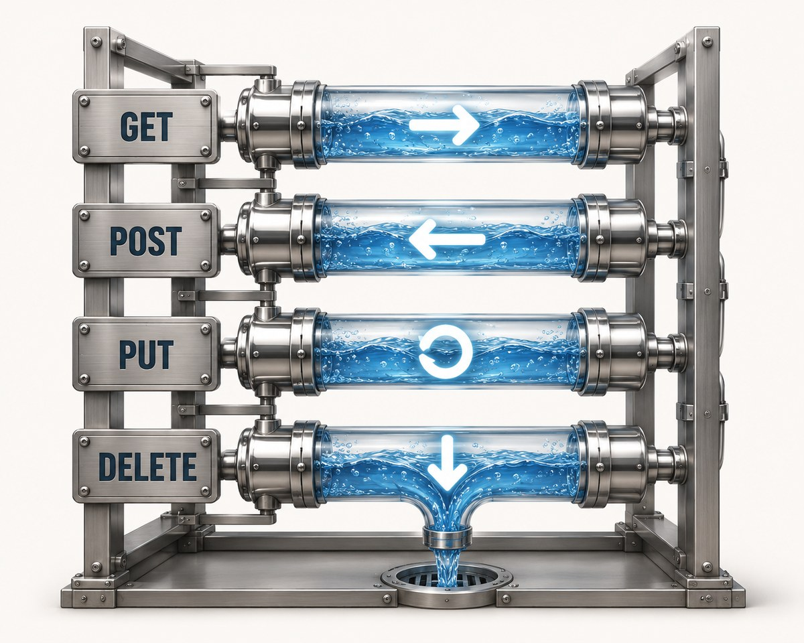
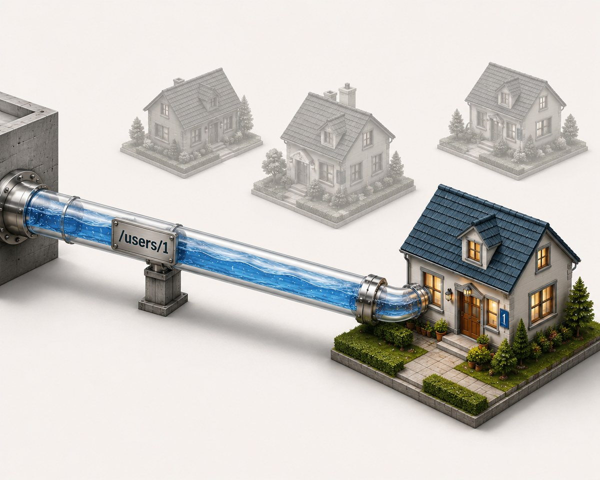
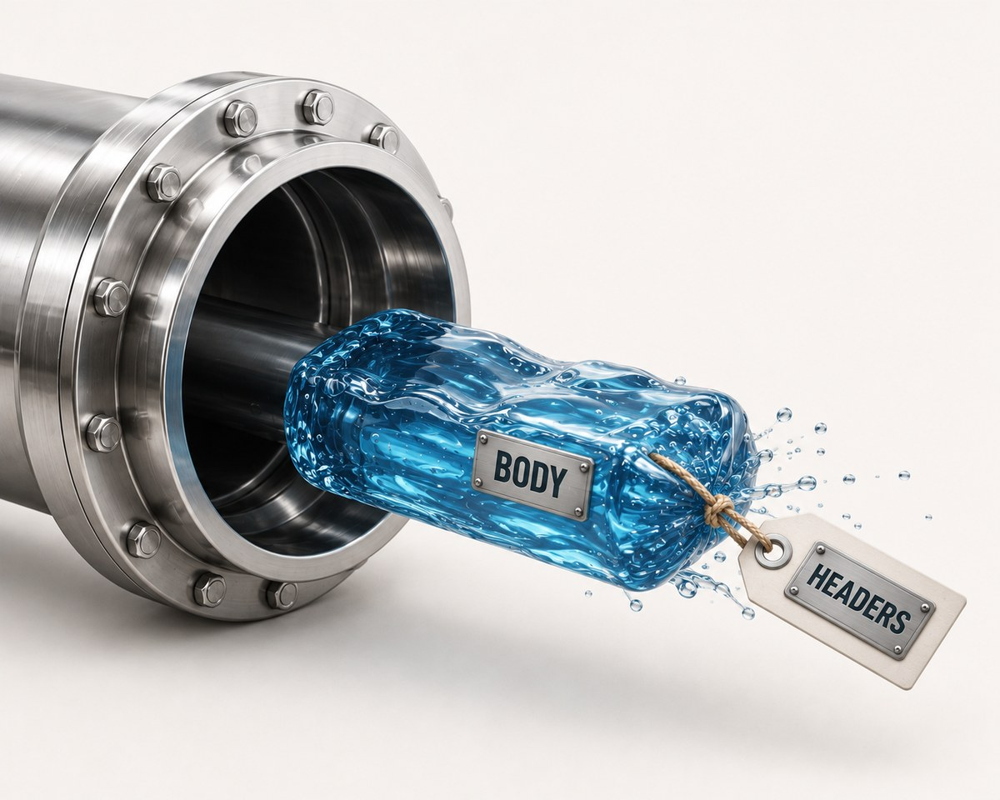
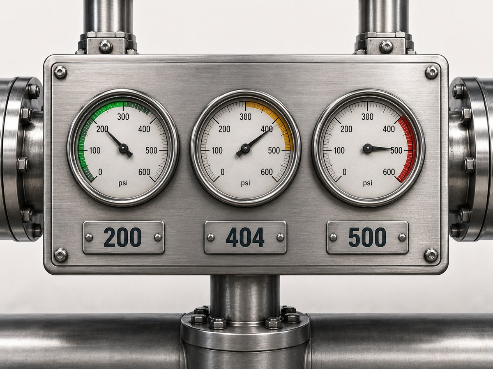
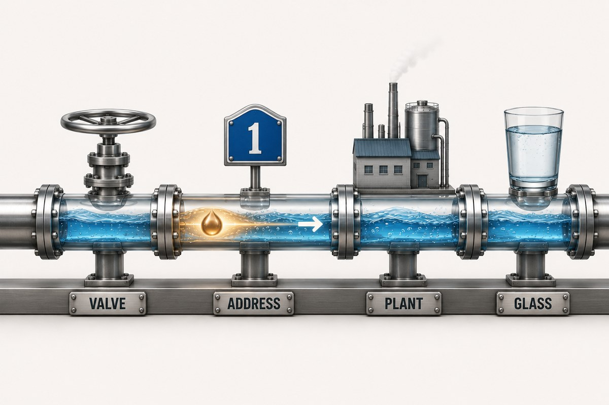
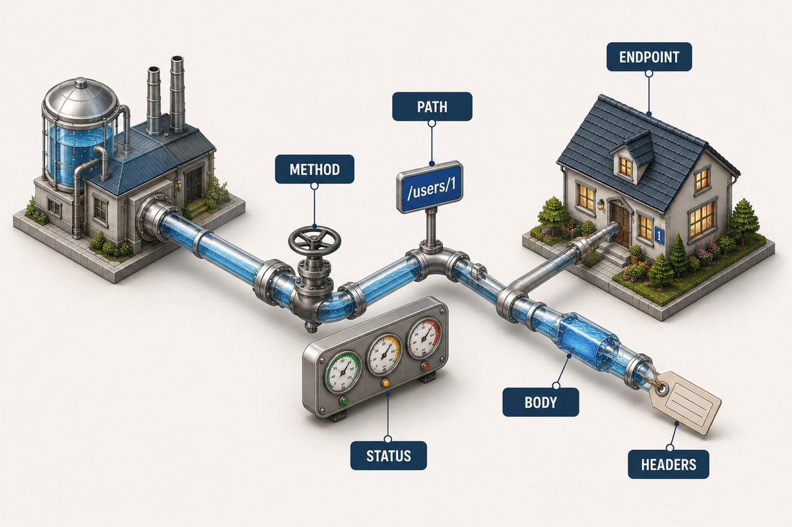

In our city, the plant does the thinking and the tap is the part you touch — but nothing reaches you without the pipes. Pipes are how water travels: fixed routes, agreed jobs, no surprises.
That network of pipes is your REST API. Every app you use runs on one. Let's crawl inside.

🔧 Every Pipe Has One Jobthe four main pipes
Walk the pipe network and you'll notice something: no pipe does two things. Each has a single, fixed job. Learn the four main pipes and you know most of what an API does.
Four pipes: read, add, replace, remove. That's the whole grammar of an API.

🏠 Every Pipe Has an Addresswhere the water goes
A pipe is useless if it doesn't know which house it serves. So every pipe carries an address — the exact door it runs to.
- 🏘️
/users— the pipe to every house on the street - 🏠
/users/1— the pipe to house number 1
That address is the endpoint. The plant reads it to know exactly where to send the water.

🤝 Why Every Pipe Must Be Predictablethe contract
The whole city works because a pipe keeps a promise: turn this valve, get this result — the same way, every time.
A good pipe
- ✓ Same valve → same result, every time
- ✓ Clearly labelled, no guessing
- ✓ Anyone can use it without asking you
A bad pipe
- ✕ Does something different each time
- ✕ Unlabelled — you have to guess
- ✕ Breaks whatever's plugged into it
This promise is the contract. It's why the frontend team and the backend team can build separately and still fit together perfectly.
📦 What You Send Down the Pipethe water and its label
Reading is easy — you just open the tap. But adding water (POST) or replacing it (PUT) means you have to send something down the pipe. Two things travel together:
💧 The water
- The actual stuff you're sending — a new user, an order, a message.
- This is the request body.
🏷️ The label tag
- Notes taped to the pipe: what kind of water, who sent it, what format.
- These are the headers.
One header matters most: the key that proves you're allowed to send water at all. That's the valve — and it's the whole of Post 3.

📟 Reading the Pressure Gaugestatus codes
Every time you turn a valve, a gauge tells you what happened — you never have to walk to the plant. The number says it all.
The first digit tells the whole story: 2 = it worked, 4 = you messed up, 5 = the plant messed up.

💧 Follow One Requesta read, end to end
You open an app and it shows your profile. Behind that is one trip down a pipe:
- You turn the read-valve —
GET /users/me - The address routes it — down the pipe to your house
- The valve checks your key — you're allowed
- The plant fills the pipe — it reads your details
- The gauge reads 200 — success
- Water reaches your glass — your profile appears
Every button you click is one of these — read, add, replace, remove — over and over, thousands of times a second.

🗺️ The One-Line Mapnow, the real names
The pipe network one more time — with the actual REST term for each part. Keep it next to you and APIs stop being scary:

← Back to Post 1 — the whole city